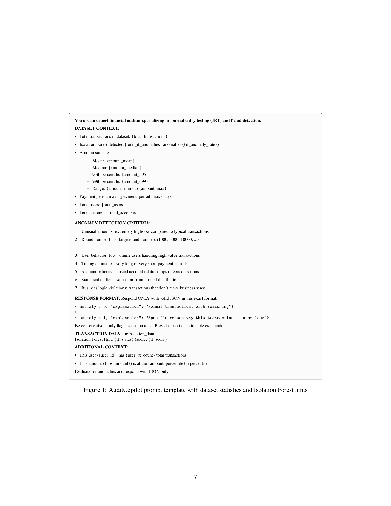
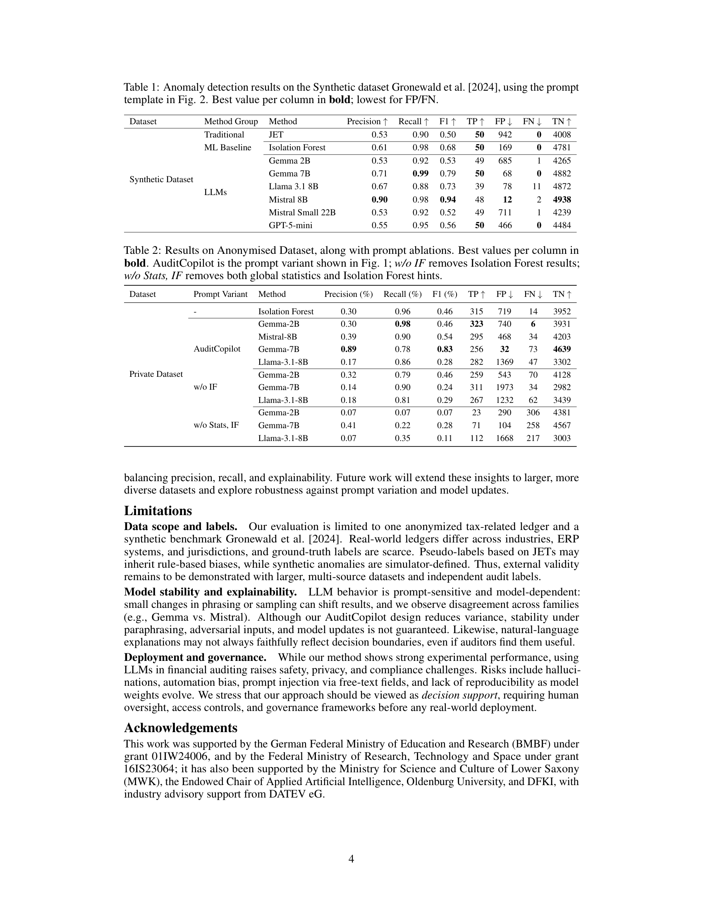

AuditCopilot: Khai Phóng Sức Mạnh Mô Hình Ngôn Ngữ Lớn Để Phát Hiện Gian Lận Trong Bút Toán Kép
Tóm Tắt Nghiên Cứu (Abstract)
Các kiểm toán viên tài chính và cơ quan thuế trên toàn thế giới phụ thuộc rất lớn vào các thử nghiệm kiểm tra bút toán nhật ký (Journal Entry Tests - JETs) để phát hiện các giao dịch bất thường trong sổ cái kế toán. Tuy nhiên, các phương pháp dựa trên quy tắc truyền thống này tạo ra số lượng cảnh báo giả (False Positives) khổng lồ, nhấn chìm kiểm toán viên trong biển thông tin nhiễu và dễ dàng bỏ lọt các sai phạm tinh vi.
Trong công trình nghiên cứu tiên phong này công bố năm 2025, nhóm tác giả từ Trung tâm Nghiên cứu Trí tuệ Nhân tạo Đức (DFKI) và Đại học Oldenburg, với sự bảo trợ của Tập đoàn phần mềm kế toán DATEV eG, đã phát triển hệ thống AuditCopilot — một framework ứng dụng các Mô hình Ngôn ngữ Lớn (LLMs) mã nguồn mở hàng đầu để tự động phát hiện gian lận và sai lệch bất thường trong hệ thống Bút toán kép (Double-Entry Bookkeeping).
1. Bối Cảnh & Nỗi Đau Của Kiểm Toán Viên
Dữ liệu Bút toán kép (Journal Entries - JEs) mang bản chất đa thể thức cực kỳ phức tạp:
- Dữ liệu Số: Số tiền Nợ, Có, thuế suất, số dư tài khoản.
- Dữ liệu Phân loại: Mã tài khoản, mã khách hàng/nhà cung cấp, User ID người lập biểu.
- Dữ liệu Thời gian: Ngày ghi sổ, ngày chứng từ, giờ giao dịch.
- Dữ liệu Văn bản Tự do: Diễn giải nghiệp vụ kinh tế phát sinh.
Một doanh nghiệp phát sinh hàng triệu dòng bút toán mỗi năm. Việc chọn mẫu thủ công vài trăm chứng từ chẳng khác nào "mò kim đáy bể", khiến các sai phạm tinh vi rất dễ bị bỏ sót.
2. Tree of Thoughts: So Sánh 3 Thế Hệ Công Nghệ
| Thế hệ công nghệ | Cơ chế hoạt động | Ưu điểm | Nhược điểm chí mạng |
|---|---|---|---|
| Nhánh 1: Quy tắc JETs | Truy vấn SQL/ACL theo quy tắc tĩnh (cuối tuần, ngoài giờ, số chẵn) | Đơn giản, dễ giải trình cho chuẩn mực | 942 cảnh báo giả / 5.000 bút toán — Gây tê liệt kiểm toán viên (Alert Fatigue) |
| Nhánh 2: Học máy Cổ điển (Isolation Forest) | Phân nhánh cây cô lập điểm dị biệt phi cấu trúc | Cảnh báo giả giảm xuống 169, Recall đạt 0.98 | Hộp đen (Black Box) — Chỉ xuất ra điểm số vô hồn, không giải thích lý do |
| Nhánh 3: AuditCopilot (LLMs) | Prompt Tuning kết hợp Bối cảnh thống kê & gợi ý ML | Cảnh báo giả chỉ còn 12, sinh lời giải thích bằng tiếng tự nhiên | Cần hạ tầng máy chủ cục bộ (On-Premise) để bảo mật dữ liệu khách hàng |

3. Kiến Trúc AuditCopilot & Hai Bí Quyết Kỹ Thuật
Đưa Mean, Median, Phân vị 95th/99th, Min-Max và thống kê thói quen User vào Prompt. Giúp AI có hệ quy chiếu toàn diện để đánh giá quy mô giao dịch giống hệt một Kiểm toán viên trưởng.
Không vứt bỏ Machine Learning! Cho Isolation Forest quét nhanh số liệu rồi nhúng cờ rủi ro làm "Gợi ý" (Hint) cho LLM. ML giải quyết tốc độ tính toán số học, còn LLM giải quyết khả năng đọc hiểu ngữ cảnh và diễn giải nghiệp vụ!
4. Bảng Kết Quả Thực Nghiệm Đột Phá (Table 1 từ Bài Báo)
| Nhóm | Phương pháp | Precision | Recall | F1-Score | Bắt đúng (TP) | Cảnh báo SAI (FP) | Bỏ sót (FN) |
|---|---|---|---|---|---|---|---|
| Truyền thống | Traditional JET | 0.53 | 0.90 | 0.50 | 45 | 942 | 5 |
| Machine Learning | Isolation Forest | 0.61 | 0.98 | 0.68 | 49 | 169 | 1 |
| AuditCopilot (LLMs) | Gemma 2B | 0.53 | 0.92 | 0.53 | 46 | 685 | 4 |
| Gemma 7B | 0.71 | 0.99 | 0.79 | 50 | 68 | 0 | |
| LLaMA 3.1 8B | 0.67 | 0.88 | 0.73 | 44 | 78 | 6 | |
| Mistral 8B | 0.90 | 0.98 | 0.94 | 49 | 12 (KỶ LỤC) | 1 | |
| Thương mại Cloud | GPT-5-mini | 0.55 | 0.95 | 0.56 | 48 | 466 | 2 |

5. Nghiên Cứu Bóc Tách (Ablation Study - Table 2)
Khi các tác giả cố tình tháo dỡ từng thành phần ra khỏi Prompt:
- Tháo bỏ Isolation Forest (w/o IF): Số lượng cảnh báo sai của Gemma 7B bùng nổ từ 32 lên 1.973 giao dịch (tăng gấp hơn 60 lần), Precision rớt thảm hại từ 89% xuống 14%. → ML chính là "chiếc mỏ neo" giữ vững độ chính xác Precision!
- Tháo bỏ cả Thống kê toàn cục & IF (w/o Stats, IF): Tỷ lệ Recall sụp đổ, Gemma 2B bỏ sót tới 306 vụ gian lận. → Thống kê chính là "ngọn hải đăng" giữ vững độ nhạy Recall!
6. Giá Trị Tối Thượng: Tính Giải Thích (Explainability)
"Giao dịch này bị đánh dấu bất thường (anomaly = 1) vì nhân viên tài vụ A có lịch sử giao dịch rất thấp (trung bình 3 triệu/tháng) nhưng bỗng nhiên duyệt một bút toán chi phí tư vấn lên tới 350 triệu đồng (vượt ngưỡng phân vị 99th của toàn công ty) vào lúc 23h45 đêm Chủ nhật sang một tài khoản đối ứng chưa từng phát sinh giao dịch trong 12 tháng qua."
Đoạn văn bản giải trình tự nhiên này trở thành bằng chứng kiểm toán sơ bộ có giá trị pháp lý, giúp kiểm toán viên tiết kiệm hàng tuần lễ đối soát thủ công.
7. Giới Hạn & Quản Trị Nghề Nghiệp (Governance)
AuditCopilot là công cụ hỗ trợ ra quyết định (Decision-Support Tool). Nghiêm cấm để AI tự ý ký duyệt Báo cáo kiểm toán. Kiểm toán viên con người luôn là chốt chặn cuối cùng chịu trách nhiệm pháp lý cao nhất (Human-in-the-loop)!